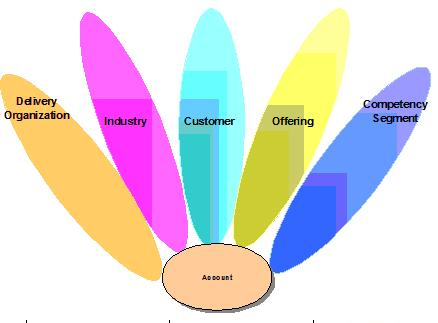
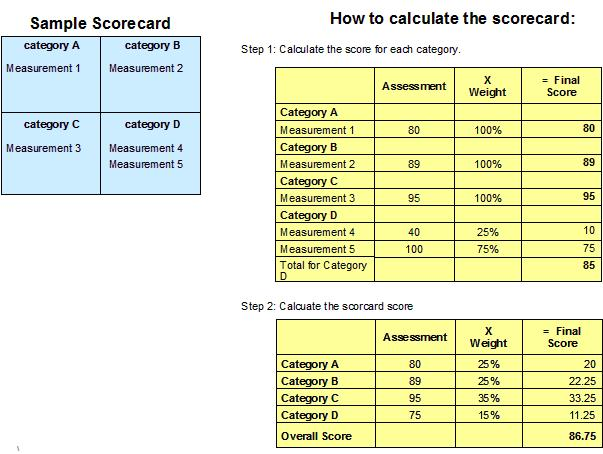
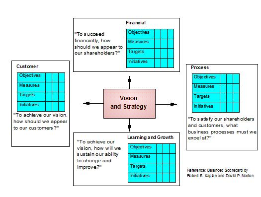
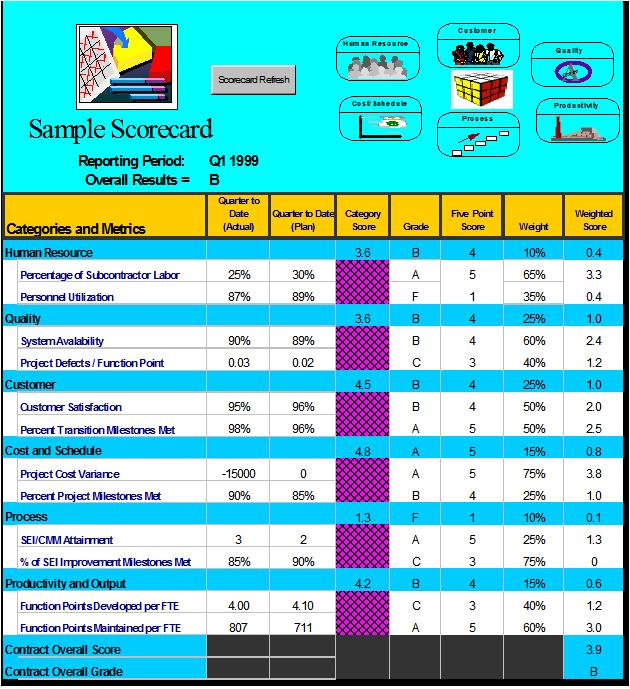

| Guideline: Building a Scorecard |
 |
|
1 DescriptionThis summarization focuses on the assessment of a set of measures against specific performance expectations and provides a methodology for deriving an overall assessment score for that measurement set. 2 ContextThe “scorecard” as a reporting mechanism is widely used within the business and IT community given its earliest introductions through the work of Robert Kaplan and David Norton in their Harvard Business Review article entitled, “The Balanced Scorecard – Measures that Drive Performance”. This technique paper does not intend to replace or duplicate an organizations desire to apply the methodologies devised by Kaplan and Norton as a way to identify and define a set of measures appropriate for a scorecard. Instead, it seeks to compliment the approaches and techniques described by a measurement model, with a corollary approach for deriving an appropriate scorecard from a measurement model. As part of laying the groundwork for further discussion in the development of the scorecard, it is important that a thorough understanding of the stakeholders associated with the measurement program be performed. In the IBM Global Services environment, those stakeholder could include both IBM internal organizations such as a Competency / Competency Segment and IBM’s Customers. To further this discussion, it is not uncommon for IBM’s Services Customers to require the implementation of a scorecard to give them appropriate visibility into the achievements that IBM is delivering to them. The picture below describes some of the stakeholders that may need to be considered. 
What is a scorecard?
In a very generic sense, a scorecard could be analogously looked at in the context of a student’s grade point average
(GPA) – the net result of a series of assessments across different courses, ultimately resulting in a singular
assessment of a student’s achievement. Following through with the GPA example, consider the idea of weighting the effect of various courses on the GPA based on the area of study and relationship to your chosen field (or major of study). For instance, if you are computer science major, your classes in computer related courses were given a higher weighting than non-major courses that every student was required to take. To re-phrase the analogy into terms associated with the measurement model, each measurement is placed into an appropriate measurement category. A target is established for each measure to be used to evaluate performance. Each of the measurement categories has an assigned weighting factor determined by the overall importance of the category. The scorecard is then simply a computation, first at the category level to determine the categories score and than across each category to arrive at an overall score for the scorecard. The following picture describes this concept: 
In addition, in step 2, the sum of all of the weights for the categories must also sum 100%. Finally, at both the category level in step 1 and the final score from step 2; the numeric assessment result could be translated into an alphabetic grade given an appropriate scale definition. For instance, an A could be defined as 90 to 100, a B as 80 to 90 and so on. The grade letter result for category A for by a “B” and for category C would receive an “A”. Finally, the scorecard can be built at multiple levels of the organization. In addition, the assessment of a single scorecard can be done at different levels of the organization. For instance, a single scorecard could be assessed at the CIO level of the organization and then individually assessed at the business units and various application areas. In this level of context, several critical success factors should be understood before moving into the steps for building a scorecard:

3 Steps3.1 Define the categories for the scorecardIn deciding what categorization schema to use for the scorecard, it is suggested that this categorization schema be the same, or map closely to the categories used in building the measurement model. This is important given that the balancing and prioritization processes performed in building the measurement model can be carried over into the processes for developing the scorecard. 3.2 Identify the measures to include in each categoryOnce the categories are defined, the measures to be included in each category should be identified. There are several ways to accomplish this:
It is not uncommon at this point to also include contractually obligated measures since the scorecard can provide an additional level of visibility for those measures. 3.3 Define the weighting for each measureNow that the measures are defined, the weight of each measure can be considered. Again, there are several ways to accomplish this:
3.4 Define the weighting for each categoryThe final step in building the scorecard is to determine the weight for each category. This can be done by identifying the relative weighting of the various measurement categories by looking at the prioritization that was performed in the measurement model. Since the prioritization is typically done at the measurement category level in addition to the measurement level, the category with the highest overall prioritization could get the highest weighting, second highest, etc. A second way could be done based on the relative important of each category as defined by the scorecard stakeholders. This can be done in a facilitated session during the identification of the measurements to be included in the model and the weighting of each of the measures. 3.5 Establish a baseline and/or targets for each measureIn order for the scorecard to provide feedback on the performance of the organization, several attributes must be considered for each measure:
3.6 Define the scoring criteria for each measure and categoryIf the requirement(s) to assign an equivalent grading is needed for the scorecard at the measurement level, the category level or both, the scoring criteria need to be established.
Scorecard Hint’s and Tip’s
4 ToolsThere are a number of effective tools that can be used to produce a scorecard report. These include the following:
Real-time graphical reports are the recommended alternative because of their dynamic access and for the speed with which they provide unambiguous feedback concerning the performance of an organization. 5 ExamplesThe following is a sample of a scorecard built in a spreadsheet tool. This example uses the measurement model categorization schema (6 measurement categories) for assessing the results of the scorecard.  |
| © Copyright IBM Corp. 1987, 2012 All Rights Reserved Property of IBM These materials are intended only for use as part of an IBM engagement |